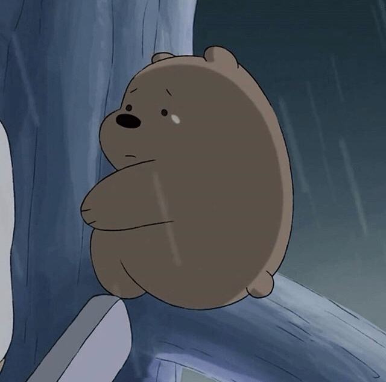
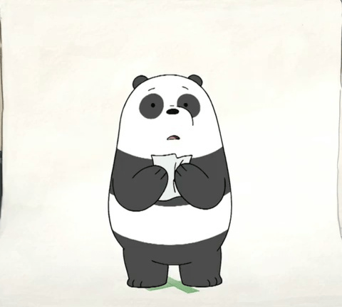

Ice Bear
Ice Bear is a polar bear who has a mysterious background. He was a foster who was raised by a Russian man. Ice Bear had to learn to survive from his new father and for himself because there were kidnappers that wanted to kill him.
Grizz
Grizz grew up in a false reality where he was a character in a reality TV show. Grizz grew up believing everything was true as his TV personality. He learned to conform to be a people pleaser.
Panda
Panda grew up as a hostage for reproductive purposes of pandas. However, he had a depressive outlook on life due to the lack of interactions with others. Thus, the experimenters provided a fake friend for him. Panda learned about the desires to be social.